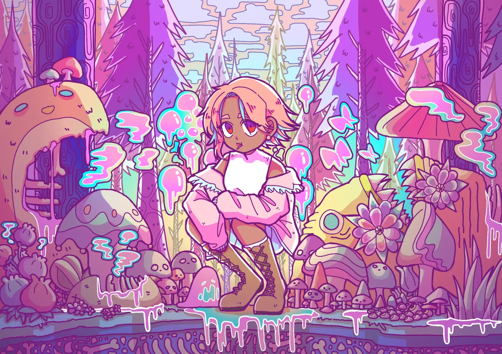

เทคโนโลยีมีเดีย · มจธ. · ปี 4
ณัฏฐณิชา พรหมบุญ
นักออกแบบที่สร้างต้นแบบที่ใช้งานได้จริง — ตั้งแต่คอนเซปต์ CAD พิมพ์ 3D เดินสายไฟ — และกำกับ AI ให้เขียนโค้ดส่วนใหญ่
- รางวัล
- รางวัลที่ 1 — KMUTT Deep Sea Jam Hackathon 2026
- สิ่งที่กำลังมองหา
- สหกิจศึกษาเต็มเวลา 13 ม.ค. – 28 พ.ค. 2027
ผลิตภัณฑ์และต้นแบบ
ดูทั้ง 13 โปรเจกต์ →เปลี่ยนไอเดียเป็นต้นแบบที่จับต้องได้ — คอนเซปต์ CAD พิมพ์ด้วยเครื่องพิมพ์ 3D ของตัวเอง เดินสายและบัดกรี — แล้วออกแบบใหม่ตรงที่การทดสอบบอกว่ายังไม่ผ่าน

METO
หุ่นยนต์ตัวเล็กที่แสดงอารมณ์ได้ สร้างขึ้นเพื่อหาคำตอบว่าการแสดงอารมณ์ช่วยให้มือใหม่เรียนเขียนโปรแกรมแบบต่อบล็อกได้ดีขึ้นหรือไม่

Magnetic Universe
ผนังแสงขนาด 40 × 40 ซม. ที่แม่เหล็กแต่ละก้อนจะได้วงแสงของตัวเอง
 รางวัลที่ 1
รางวัลที่ 1
DeepCore → DeepSphere
เครื่องสำรวจทะเลลึกที่ใช้มือเล่น สร้างจากข้อมูลสัตว์ที่มีอยู่จริงเท่านั้น

svgtostl
แปลงภาพวาดถมดำของฉันเป็นชิ้นงานพิมพ์ได้ ที่มุมแหลมและเส้นโค้งตรงตามภาพ

โคมไฟพิกเซล Minecraft
โคมไฟพิกเซลพิมพ์ 3D ที่ทอดเงาเป็นบล็อก ควบคุมจากโทรศัพท์

เว็บไซต์คอมมิชชัน MOFYCH
เว็บของร้านฉัน: คิวที่คนติดตามได้ และระบบจับคู่สีเพ้นต์ให้ได้สีที่ตรง
ตัวละคร × เทคโนโลยี
ดูทั้ง 10 โปรเจกต์ →ตัวละคร และระบบที่ทำให้ตัวละครทำตัวเหมือนมีชีวิต — ในแอปแชต ม็อดเกม และหุ่นยนต์ตัวเล็ก

OC Chat
แอปแชตที่ตัวละครออริจินัลส่งข้อความหากัน — ทุกข้อความมาจากสิ่งที่พวกเขากำลังทำอยู่ในชีวิตจำลอง

ออกแบบตัวละคร
ตัวละครออริจินัลของฉันเอง — ภาพหลายมุม จานสี จากร่างถึงลงสี
 ภาพพอร์ตเทรตสร้างด้วย AI
ภาพพอร์ตเทรตสร้างด้วย AI
ม็อด This War of Mine
ตัวละครของฉันเอง 2 ตัวที่เพิ่มเข้าไปในเกม พร้อมประวัติและบันทึกภาษาไทยที่ฉันเขียน
ม็อด Stardew Valley
NPC ที่รู้สึกเหมือนมีชีวิต — มีกิจวัตรของตัวเอง โหมดเดินตามและพาไป และพูดให้เข้ากับจังหวะ

แอนิเมชัน
งาน 3 ชิ้นจากวิชาที่ทำใน Adobe Animate: คลิปสั้น หนังสั้นสยองขวัญ และสติกเกอร์ไลน์

METO — สีหน้าและเว็บ
หุ่นยนต์ตัวเล็กที่ฉันออกแบบและทำแอนิเมชันหน้าจอใบหน้าเอง พร้อมเว็บเขียนโปรแกรมแบบต่อบล็อก
การศึกษา
มจธ. · วท.บ. เทคโนโลยีมีเดีย · 2023 – ปัจจุบัน · แผนสหกิจศึกษา · GPAX 3.61
วิธีทำงาน
เป็นหัวหน้าทีมในทุกโปรเจกต์ที่ทำเป็นทีม ฉันเขียนสเปก ให้ AI เขียนโค้ดส่วนใหญ่ แล้วตรวจผลเอง
งานลงมือทำ
CAD → พิมพ์ 3D ด้วยเครื่องของตัวเอง · ESP32 / Arduino · บัดกรี · เย็บผ้าและงานปัก · Figma